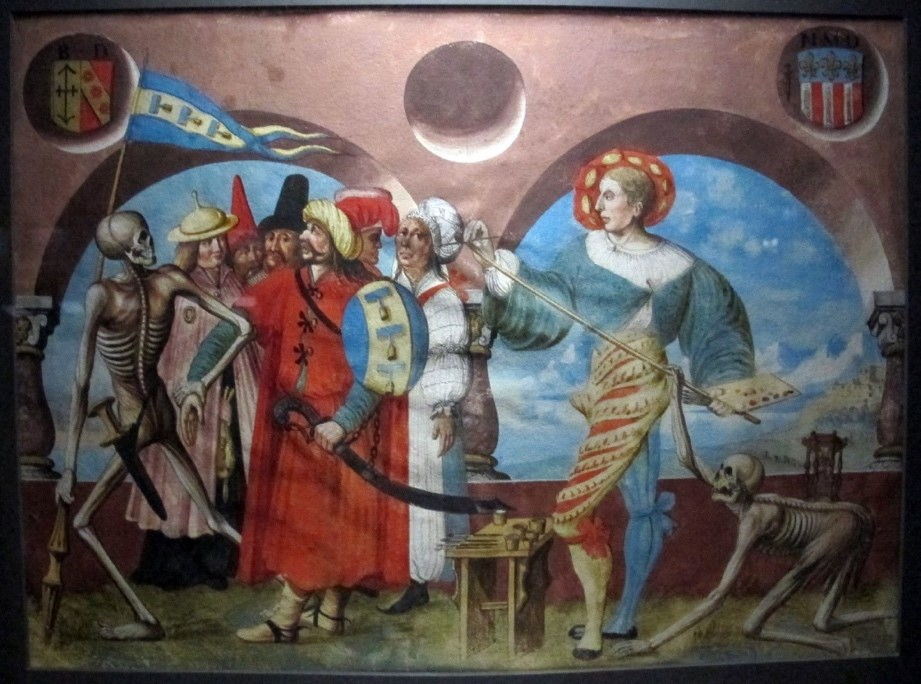
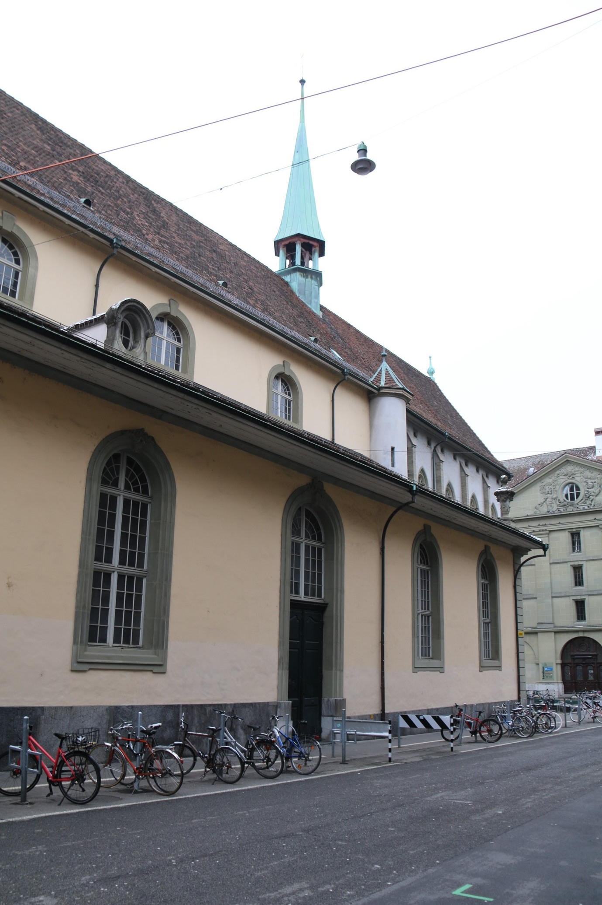

Einst tanzte in der Berner Innenstadt der Tod.
Vor etwas mehr als 500 Jahren – zwischen 1516 und 1519 – forderte er erstmals, von der Friedhofmauer der dominikanischen Klosterkirche herab, zum Tanz auf. Ein monumentaler Totentanz prangte da, wohl über hundert Meter lang: ein Meisterwerk des Berner Künstlers, Söldners und Staatsmanns Niklaus Manuel (ca. 1484–1530). Auf 24 Bildfeldern zeigte die Wandmalerei eine Reihe lebensgrosser Vertreter verschiedener Gesellschaftsschichten, wie sie von gelenkigen Gerippen frech angetanzt wurden. Die dazugehörigen Paarreime berichteten von einem Tod, der «Herrschet ueber die Menschen ganntz / wir mueßent all an sinenn tanntz». Der Maler nahm sich selbst davon nicht aus, sondern stellte sich als letzten Tanzpartner des Todes dar. Der gemalte Maler war gerade dabei, die letzten Striche an einer Gruppe von todgeweihten «Heiden» anzubringen, als ihm der Tod von hinten ins Malutensil griff. Die Bildtafel brachte sowohl Manuels Sinn für Humor als auch sein gesundes Selbstbewusstsein als Künstler zum Ausdruck.
Albrecht Kauw nach Niklaus Manuel, Gouache-Malerei «Tod und Maler», 1649. (Bild: Sailko, Wikimedia Commons)
Dies ist ein Ex-Ort
Der Tod tanzte einst in der Berner Innenstadt, weil man im Jahr 1660 obrigkeitlich befand, dass die Kirchenmauer die angrenzende Zeughausgasse zu sehr verengte. Die Mauer wurde samt Totentanz kurzerhand eingerissen. Dieser städteplanerisch motivierte Kunstvandalismus betrübt nicht bloss die Nachwelt: Auch Zeitgenossen wie der deutsche Kunsthistoriker Joachim von Sandrart (1606–1688) bedauerten, dass man hier ein vielgepriesenes Werk als blosses Verkehrshindernis beseitigt hatte. Für diese Beitragsserie etwas unüblich, ist der Berner Totentanz heute also – frei nach Monty Python – ein Ex-Ort.
Südseite der Französischen Kirche. (Bild: Maria Lissek)
Das Schicksal von Manuels Totentanz entbehrt nicht einer gewissen
Ironie. Mit ihm fiel das Werk eines reformatorischen Bilderstürmers
einem – ungleich banaleren – Bildersturm zum Opfer: Manuel spielte
selbst eine führende Rolle, als 1528 Bilder und kultischer Zierrat aus
den städtischen Kirchen Berns entfernt wurden. Dass wir eine klare
Vorstellung davon haben, wie sein Totentanzbild einst aussah, haben wir
dem späteren Maler Albrecht Kauw (1616–1681) zu verdanken. Mit gutem
Gespür für Timing fertigte er 1649 die Gouache-Kopie des Tanzes an, die
wir heute kennen, und die im Berner Historischen Museum zu besichtigen
ist. Von Manuel selbst ist einzig eine ausdrucksstarke Federzeichnung
erhalten, welche die Szene mit dem Tod und dem Chorherrn zeigt. Sie wird
im Hessischen Landesmuseum in Deutschland aufbewahrt.
Der Nachwelt mag 1660 ein grosses Kunstwerk und ein potenzieller
Touristenort verloren gegangen sein – nicht aber ein Erinnerungsort.
Solche «Orte» können gemäss dem französischen Historiker Pierre Nora,
der den Begriff des lieu de mémoire einst prägte, im geografischen Sinn
durchaus ortlos sein. Und tatsächlich ist der verlorene Berner Totentanz
heute wohl Manuels bekanntestes und populärstes Werk. 2016 war der
Bilderkreis etwa Zugpferd einer grossen Wechselausstellung des
Historischen Museums über die Zeit der Reformation. Im Jahr zuvor
inspirierte er Jared Muralt, Balts Nill und weitere Künstler und
Wissenschaftler zu einer eindrücklichen Neuschöpfung: einem modernen
Berner Totentanz, dessen Kernstück das humorvoll-ernste
Leporello-Kunstwerk «Totentanz?» bildet und der seit 2016 mehrfach, auch
ausserhalb von Bern, ausgestellt worden ist.
Totentanz und memento mori
Der Totentanz als Motiv der bildenden Kunst entstand im frühen
fünfzehnten Jahrhundert – literarische Formen kamen noch etwas früher,
die Musik deutlich später. Das früheste uns bekannte Beispiel, das Bild
und Text kombinierte, ist die danse macabre an der Friedhofsmauer des
Pariser Cimetière des Innocents von 1424. Auch diese Wandmalerei hat
nicht Bestand gehabt, ist uns aber in Guyot Marchants Holzschnitten von
1485 erhalten geblieben. Um 1440 entstand in Basel ein ungefähr 60 m
langer Zyklus, der als der älteste im deutschsprachigen Raum gilt. Von
ihm bleiben nur wenige, mehrfach restaurierte Bruchstücke und eine kurz
nach der Zerstörung des Originals entstandene Aquarellkopie von Johann
Rudolf Feyerabend (1779–1814). Beide befinden sich (im Fall der
Bruchstücke zumindest grösstenteils) im Besitz des Historischen Museums
Basel.
Grundsätzlich ist das Totentanzmotiv eine Form des memento mori: eine
Mahnung an die Betrachterin, stets die Vergänglichkeit des irdischen
Daseins vor Augen zu haben. Das Aufkommen der Totentanzdarstellungen
wird meist mentalitätsgeschichtlich vor dem Hintergrund der
Pestepidemien erklärt, die ab der Mitte des vierzehnten Jahrhunderts
Europa heimsuchten und innert kürzester Zeit ganze Landstriche
entvölkerten. Mit dem grossen Sterben veränderte sich das menschliche
Verhältnis zum Tod grundlegend. Allen Menschen stand ein Tanz mit dem
Tod bevor – und der Tod konnte diesen offensichtlich jederzeit und ohne
Rücksicht auf Rang und Verdienst einfordern. Brigitte Schulte beschreibt
den thematisch mehrschichtigen Totentanz treffend als «künstlerische […]
Bewältigung der menschlichen Endlichkeitserfahrung», Ausdruck der
«Sehnsucht […] nach einem sinnerfüllten Leben» und «monumentale
Bußpredigt».
Manuel in Walliser Totentanz
Das Totentanzmotiv erfreut sich gegenwärtig wieder grosser Beliebtheit.
Es ist keine Übertreibung zu sagen, dass es sich um eines der
bekanntesten und beliebtesten Kulturerzeugnisse des Spätmittelalters
handelt. Wie bei jedem Kulturerzeugnis jedoch, das lange nach seinem
Entstehen Anklang findet, sehen wir heute unweigerlich anderes in ihm
als seine ursprünglichen Betrachter.
Muralt und Nills «Totentanz?»
etwa fragt ausdrücklich nach unserem heutigen Umgang mit dem Sterben –
und wie sich das zu den mittelalterlichen Vorstellungen verhält.
Indirekter, aber nicht weniger eindringlich werden die Unterschiede
zwischen diesen zeitlich fernen Vorstellungswelten in einer
literarischen Rezeption von Manuels Totentanz beschworen. In Werner
Rysers Geschichtsroman Walliser Totentanz aus dem Jahr 2009 kommt der
Berner Totentanz zwar nur am Rande vor – wir erfahren von ihm bloss
durch die Gedanken des fiktionalisierten Niklaus Manuel. Doch kommt ihm,
wie bereits der Buchtitel andeutet, grosse thematische Relevanz zu, wenn
auch in mancherlei Hinsicht eine bitter ironische.
Die Handlung
spielt im späten fünfzehnten und frühen sechzehnten Jahrhundert. Die
Hauptfigur, Magdalena Capelani , lebt am Rande der Gesellschaft in
Münster im Wallis. Hier herrscht, wie die Buchrückseite
unmissverständlich ankündigt, «tiefes Mittelalter». Hunger und Seuche
vermengen sich ungut mit einem Glauben, der nur wenig Anlass zur
Glaubensverfolgung braucht. Durch Magdalena, eine eigenständige
Kräuterfrau, erfährt die Leserschaft gleich von mehreren Totentänzen:
Vom Volksglauben an einen geisterhaften «Gratzug» zum Beispiel, sowie
von einem lokalen Begräbnisritual, bei dem tatsächlich auf dem Grab
eines Verstorbenen getanzt wird. Vor allem aber erfährt sie von der
Gewalt, deren Opfer Frauen und Randständige wie Magdalena routinemässig
werden: Der titelgebende «Walliser Totentanz» ist der tägliche
Überlebenskampf, der im Buch durchaus dem Spruch homo homini lupus folgt
– «der Mensch ist dem Menschen ein Wolf».
In Walliser Totentanz
sitzt eine moderne Frau in einer fast schon stereotyp mittelalterlichen
Welt fest, welche die tröstliche Seite des Totentanzmotiv wieder und
wieder Lügen straft. Magdalena zerbricht zuletzt an einer Gesellschaft,
die ihr auf grausame Weise ihr Zuhause und ihre Familie genommen hat.
Nicht einmal die Aussicht auf jenseitige Erlösung gesteht man ihr zu: Im
Buch wird die Seelenrettung primär als Geldgeschäft betrieben. Die
egalitäre Symbolik des Totentanzes Manuels – dem sie in Bern kurz
begegnet – wird damit zum Hohn für Leute wie sie. Der Tod mag
tatsächlich alle holen, arm wie reich. Doch solange auch das Leben nach
dem Tod eine Frage der finanziellen Mittel ist, kann er kaum der
Gleichmacher und Mahner für alle sein, als den ihn der Totentanz
beschwört.
Totentanz im Zeitalter des Individualismus
Man mag sich bei der Lektüre vom Walliser Totentanz damit im Jahr 2021
leise an die Diskurse rund um die gegenwärtige Pandemie erinnert fühlen.
Besonders in den frühen Monaten hörte man oft die Behauptung, wir sässen
nun alle im selben Boot. Wie man seither gesehen hat, steht diese
Behauptung im Widerspruch zu der Tatsache, dass unterschiedliche
Lebensverhältnisse durchaus unterschiedlich seetüchtigen Booten
entsprechen.
Man mag sich bei der Lektüre vom Walliser Totentanz damit im Jahr 2021
leise an die Diskurse rund um die gegenwärtige Pandemie erinnert fühlen.
Besonders in den frühen Monaten hörte man oft die Behauptung, wir sässen
nun alle im selben Boot. Wie man seither gesehen hat, steht diese
Behauptung im Widerspruch zu der Tatsache, dass unterschiedliche
Lebensverhältnisse durchaus unterschiedlich seetüchtigen Booten
entsprechen.
Dr. des. Matthias D. Berger ist postdoktoraler wissenschaftlicher Mitarbeiter am Englischen Institut der Universität Bern.
Weitere Artikel von {{ author.author }} finden Sie hier:
- {{author.location[i]}}: {{author.fulltitle[i]}} {{ beitrag }}
Zur Vertiefung:
- Egger, Franz: «Mittelalterliche Totentanzbilder». Todesreigen – Totentanz: Die Innerschweiz im Bannkreis barocker Todesvorstellungen, hrsg. von Brulisauer, Josef / Hermann, Claudia und Historisches Museum Luzern, Luzern: Raeber Verlag, 1996, 9–33.
- Hofer Paul und Luc Mojon: Die Kunstdenkmäler des Kantons Bern, Band V: Die Kirchen der Stadt Bern. Antonierkirche, Französische Kirche, Heiliggeistkirche und Nydeggkirche, Basel: Birkhäuser Verlag, 1969. 70–83.
- Hugger Paul, «Tod». Historisches Lexikon der Schweiz, verfügbar unter: https://hls-dhs-dss.ch/de/articles/027291/2015-02-10/(07.01.2021).
- Schulte Brigitte, Die deutschsprachigen spätmittelalterlichen Totentänze. Unter besonderer Berücksichtigung der Inkunabel «Des dodes dantz». Lübeck 1489, Köln: Böhlau, 1990.